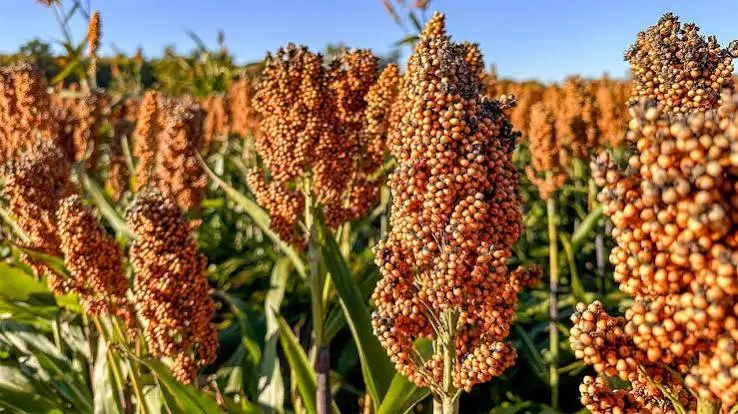
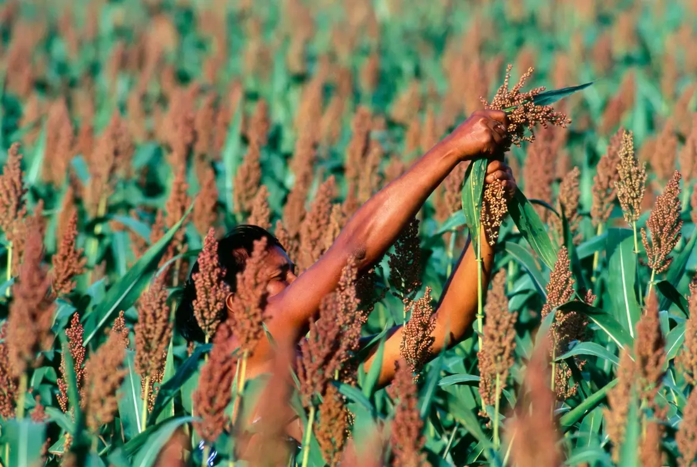
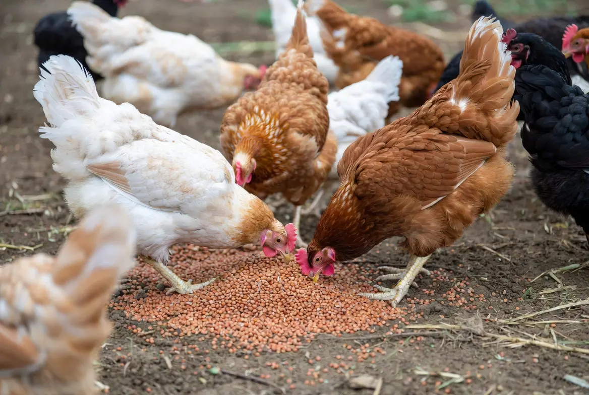

🌾 Growing Grain Sorghum for Chickens
Learn how to grow grain sorghum—commonly called milo—as a homegrown chicken feed crop. This guide explains planting, spacing, drought management, harvesting seed heads, threshing, drying, storage, nutrition, tannins, and safe ways to offer sorghum grain to backyard chickens.
🌾 Can Chickens Eat Grain Sorghum?
Yes. Chickens can safely eat clean, mature grain sorghum—often called milo—as a supplemental grain. It may be fed whole, cracked, coarsely ground, sprouted, fermented, or on thoroughly dried seed heads. Grain sorghum should supplement a complete poultry ration rather than replace it.
Most healthy adult chickens readily eat whole raw grain sorghum when appropriate insoluble grit is available. Household cooking is not normally necessary before feeding mature grain.
Chickens may also eat plain cooked grain sorghum after it has cooled. Serve it without butter, oils, salt, sugar, sauces, garlic, onions, or other seasonings.
Other practical feeding methods include:
- Whole grain: Suitable for most adult chickens as a supplemental energy grain.
- Cracked or coarsely ground grain: May be useful for smaller birds or mixed grain blends.
- Sprouted grain: Clean, untreated grain may be sprouted under sanitary conditions and offered as supplemental green forage.
- Fermented grain: Grain sorghum may be included in properly managed fermented feed. Discard any batch showing mold, slime, foul odors, or other signs of spoilage.
- Whole dried seed heads: Excellent pecking enrichment that encourages natural foraging behavior.
Grain sorghum is primarily an energy grain. It does not provide the calcium, balanced amino acids, vitamins, or minerals required by laying hens and should never replace a complete poultry ration. Never feed moldy, heated, ergot-contaminated, chemically treated, or otherwise contaminated grain.
🌾 Is Grain Sorghum a Good Crop for Chickens?
Grain sorghum is a warm-season cereal grown for its small, round seeds. It is often called milo in the United States and is used in livestock feed, birdseed, human food, and industrial products.
For backyard chicken keepers, grain sorghum may provide:
- Carbohydrate-rich grain
- Dietary energy similar in purpose to corn
- Whole dried seed heads for enrichment
- A crop adapted to hot summers
- Greater drought tolerance than field corn
- Dry grain that can be stored
- A possible alternative where corn performs poorly
Its main limitations are bird pressure, threshing labor, grain molds, tannin differences among varieties, low calcium, incomplete amino-acid balance, and lower yellow-pigment content than yellow corn.
Is This Crop Right for Your Flock and Backyard?
Crop success depends on more than whether chickens can eat it. Climate, growing space, sunlight, soil, water, labor, processing, equipment, harvest goals, and storage all affect whether it is a practical choice for your property.
🌱 Use the Feed Crop Planner →📋 Grain Sorghum Quick Facts
🌱 Make Sure You Buy Grain Sorghum
Several crops carry the sorghum name, but they are grown and managed for different purposes.
Grain Sorghum
Shorter plants selected to produce mature seed heads and dry grain.
This is the crop covered by this guide.
Forage Sorghum and Sudangrass
Taller crops grown primarily for grazing, hay, green chop, or silage.
Green forage can present prussic-acid and nitrate concerns under certain conditions.
Sweet Sorghum
Tall plants selected for sugar-rich stalk juice used for syrup or fermentation.
Sweet sorghum is not the same crop as compact grain-producing milo.
The plant parts, harvest stages, nutritional values, and safety concerns are different. This guide focuses on clean, mature, dry grain.
🌾 Choose Low-Tannin Grain Sorghum
Grain sorghum varieties differ in seed color, seed-coat characteristics, tannin concentration, maturity, height, disease resistance, and bird resistance.
Tannins can:
- Reduce palatability
- Bind dietary proteins
- Reduce protein digestion
- Reduce amino-acid availability
- Lower usable dietary energy
- Produce inconsistent poultry performance
Choose a named low-tannin or tannin-free grain-sorghum variety intended for livestock feed, food, or grain production. Do not assume that grain color alone reliably identifies tannin concentration.
🌈 Does Sorghum Grain Color Matter?
Sorghum grain may be white, cream, yellow, bronze, red, brown, or nearly black depending on genetics and seed-coat characteristics.
Color does not provide a dependable backyard test for:
- Tannin concentration
- Protein content
- Digestibility
- Energy value
- Suitability for poultry
- Mycotoxin contamination
Use variety descriptions and supplier information rather than judging the grain only by appearance.
🗓 When to Plant Grain Sorghum
Grain sorghum is frost sensitive and requires warm soil. Direct sow it after frost danger has passed and soil at planting depth has reached approximately 60°F or warmer.
| Region | General Planting Approach | Likely Grain Harvest |
|---|---|---|
| Cold North | Plant after frost in the warmest available location. Choose the earliest suitable variety. | Early fall before hard frost and prolonged cold rain. |
| Midwest and Northeast | Plant in late spring after soil reaches approximately 60°F and warm weather is established. | Late summer through fall. |
| Upper South | Plant from mid- to late spring after frost. Time flowering to avoid the most severe drought where possible. | Late summer through fall. |
| Deep South | Plant in spring after frost and warm soil conditions. Select a variety adapted to regional humidity and disease pressure. | Summer through fall, depending on planting date. |
| Southwest | Plant after frost when soil is warm. Irrigation during establishment and flowering may improve yield. | Late summer through fall. |
| Pacific Northwest | Plant after frost in a warm protected location and use an early variety in cool-summer areas. | Early fall before persistent cold wet weather. |
| Coastal West | Plant when the soil is consistently warm. Inland valleys are generally more dependable than cool coastal areas. | Late summer through fall. |
📐 How Much Space Does Grain Sorghum Need?
Grain sorghum is planted more densely than corn. Practical small-plot spacing may include:
- Approximately 2–6 inches between plants
- Approximately 20–30 inches between hand-managed rows
- Closer rows where cultivation equipment and water allow
- Wider spacing where drought risk is severe
Using midpoint spacing of approximately 4 inches between plants and 25 inches between rows gives a planning estimate of:
| Growing Area | Approximate Plants | Important Limitation |
|---|---|---|
| 10 square feet | About 14 plants | A small test plot rather than meaningful grain production. |
| 50 square feet | About 72 plants | Wild-bird pressure may remove much of a small harvest. |
| 100 square feet | About 144 plants | Density should be reduced under severe dryland conditions. |
These figures estimate a manageable row-grown stand. They do not guarantee a certain weight of harvested grain.
🪴 How to Plant Grain Sorghum
- Choose a full-sun location. Provide at least six to eight hours of direct sunlight.
- Wait for warm soil. Plant only after frost danger has passed and soil is approximately 60°F or warmer.
- Prepare a clean seedbed. Control established weeds and break up severe surface compaction.
- Plant approximately 1–2 inches deep. Use shallower planting where moisture is near the surface and slightly deeper planting in warm, dry soil.
- Use practical row spacing. Rows make hand weeding, observation, and harvesting easier.
- Keep the seed zone moist. Sorghum is drought tolerant after establishment but still needs moisture to germinate.
- Thin crowded areas if necessary. Maintain a population suited to available water and fertility.
- Control weeds early. Young sorghum plants may be slow to dominate the bed.
🌱 Soil and Fertility
Grain sorghum can grow across a broad range of soils, but dependable grain production requires suitable drainage and fertility.
The Backyard Chicken Planner database uses a general soil-pH range of approximately 5.5–7.5.
A soil test should guide:
- Soil pH correction
- Nitrogen
- Phosphorus
- Potassium
- Sulfur
- Organic matter
- Possible micronutrient concerns
Sorghum may use water more efficiently than corn, but it is still a cereal grain that removes nutrients when the seed is harvested and carried away.
Fertilizer salts and ammonia can reduce germination or injure young roots. Follow soil-test and product guidance.
💧 Watering Grain Sorghum
Grain sorghum is known for drought tolerance, but drought tolerance does not mean the crop produces maximum grain without moisture.
Water is especially valuable during:
- Germination
- Seedling establishment
- Rapid vegetative growth
- Boot stage
- Heading
- Flowering and pollination
- Early grain filling
Established sorghum may slow its growth during dry conditions and resume when moisture returns. Severe or prolonged drought can still reduce panicle size, seed number, kernel weight, and final yield.
🌡 Why Sorghum Handles Drought Better Than Corn
Sorghum commonly performs better than corn under limited moisture because it can:
- Reduce growth during drought stress
- Roll its leaves to reduce water loss
- Develop an extensive root system
- Resume growth after some stress periods
- Use fewer plants per area under dryland conditions
- Maintain production under heat that severely reduces corn yield
These traits improve resilience but do not make sorghum immune to crop failure.
🌾 Understanding Sorghum Seed Heads
Grain sorghum produces a branching seed head called a panicle. Depending on the variety, the panicle may be compact, semi-compact, or open.
After heading:
- Flowers open across the panicle
- Pollination occurs
- Soft developing kernels begin forming
- Grain progresses through milk and dough stages
- Kernels harden and reach mature color
- Plant tissue gradually dries
Flowering and grain maturity may not occur at exactly the same time across every plant.
🐦 Protecting Sorghum from Wild Birds
Exposed grain heads can attract wild birds before the crop is fully mature. Small backyard plots may suffer a larger percentage loss than broad agricultural fields.
Possible protections include:
- Supported bird netting over the plot
- Individual breathable mesh bags over selected heads
- Reflective or movement-based deterrents changed frequently
- A framed wildlife enclosure for a small trial bed
- Harvesting mature heads before excessive shattering or bird loss
- Finishing drying under protected cover
Loose netting can entangle chickens, wild birds, snakes, and other wildlife. Keep it tight, supported, visible, and secured.
🐛 Common Grain Sorghum Pests
| Problem | What You May Notice | Possible Response |
|---|---|---|
| Sugarcane aphid | Clusters of pale aphids, sticky honeydew, shiny leaves, or black sooty mold | Scout regularly and follow current regional treatment thresholds. |
| Greenbug | Yellowing, reddish injury, stunting, or aphids on leaf undersides | Use resistant varieties where appropriate and follow Extension scouting guidance. |
| Sorghum midge | Poor grain set, empty seed structures, or tiny orange-red flies during flowering | Plant adapted varieties promptly and avoid severely delayed isolated plantings. |
| Fall armyworm | Ragged leaf feeding or larvae in whorls and heads | Inspect plants regularly and use food-crop controls only when needed. |
| Headworms | Chewed developing kernels and caterpillars inside seed heads | Monitor during flowering and grain filling and follow regional thresholds. |
| Wild birds | Missing grain, broken panicles, or flocks feeding on heads | Use supported netting, head bags, deterrents, or timely harvest. |
| Stored-grain insects | Holes, dust, webbing, insects, or heated grain | Store only clean dry grain and inspect containers regularly. |
🦠 Sorghum Diseases and Grain Mold
| Problem | What You May Notice | Why It Matters |
|---|---|---|
| Grain mold complex | Gray, pink, black, white, or weathered kernels | Reduces grain quality and may be associated with harmful fungal metabolites. |
| Anthracnose | Leaf lesions, stalk damage, panicle infection, or premature decline | Can reduce plant health and grain production. |
| Head smut | Seed head replaced by a large dark fungal structure | Destroys the grain-producing panicle. |
| Ergot | Sticky honeydew or fungal growth replacing developing grain | Contaminated grain may be unsafe and should not be fed. |
| Stalk rot | Weak stems, premature death, or lodging | Increases harvest losses and weather exposure. |
Appearance and odor cannot reliably determine whether harmful toxins are present. Grain intended for feeding may require professional laboratory testing when contamination is suspected.
🔎 How to Tell When Grain Sorghum Is Mature
Mature sorghum grain should be firm and fully developed rather than soft or milky.
Common maturity signs include:
- Kernels have reached their final variety-specific color
- Grain feels hard
- The seed head has lost much of its green appearance
- Lower leaves and stalk tissue begin drying
- A dark layer develops near the base of mature kernels
- Kernels separate from the panicle more readily after drying
Physiological maturity does not guarantee that grain is dry enough for sealed storage.

✂️ How to Harvest Grain Sorghum
Harvesting grain sorghum at the correct maturity stage is important for preserving grain quality. Mature seed heads should be firm, fully developed, and allowed to dry properly before threshing and storage.
- Inspect several heads. Confirm that most kernels are mature, firm, and fully colored.
- Choose dry weather. Avoid harvesting saturated heads immediately after rain or heavy dew.
- Cut the panicles. Use hand pruners, shears, or another safe tool and leave a short section of stalk for handling.
- Collect heads carefully. Place them in a clean container or on a tarp to reduce grain loss.
- Separate questionable heads. Discard heads with mold, ergot, severe insect damage, discoloration, or foul odor.
- Move the harvest under cover. Protect it from rain, dew, birds, rodents, and chickens.
- Finish drying before threshing or storage. Spread heads thinly with strong airflow.
🌬 Drying Sorghum Seed Heads
Harvested heads must dry thoroughly before they are placed into sealed storage.
For a small harvest:
- Spread heads in a single layer when possible
- Use screens, racks, or mesh trays
- Provide warm, dry airflow
- Keep heads protected from rain and condensation
- Turn or rearrange them periodically
- Remove heads that develop heat, mold, or off odors
- Do not seal damp heads inside buckets or plastic bags
Moisture may remain within the grain or thick portions of the panicle. Continue drying whenever grain condition is uncertain.
🧺 How to Thresh Sorghum by Hand
Threshing separates mature grain from the dried panicle.
Small quantities may be threshed by:
- Rubbing dry heads between gloved hands
- Beating heads gently inside a clean container
- Working dry heads inside a durable bag
- Using a hand-cranked grain thresher
- Using a small powered thresher designed for grain
The threshed material will contain grain, stems, chaff, dust, damaged kernels, and immature seed.
Threshing creates dust and airborne plant material. Work outdoors or in strong ventilation and use suitable eye and respiratory protection when needed.
🌬 Winnowing and Cleaning the Grain
Winnowing uses airflow to separate lighter chaff from heavier grain.
For a small harvest:
- Work over a large tarp or container
- Pour grain slowly in front of a gentle fan or breeze
- Repeat the process rather than using excessive airflow
- Remove stones, stems, insects, and damaged kernels by hand
- Dry the cleaned grain again if necessary
Do not store grain mixed with damp stems or green plant material.
🪣 Storing Grain Sorghum
Store only clean, fully dried, cool grain.
A storage container should be:
- Food safe
- Dry
- Rodent resistant
- Insect resistant
- Protected from heat and sunlight
- Kept away from damp floors and walls
- Opened periodically for inspection
Watch for:
- Condensation
- Heating
- Clumping
- Webbing
- Grain-boring insects
- Musty or sour odor
- Discoloration
- Visible mold
- Rodent contamination
Whole grain usually stores longer than cracked or ground sorghum. Process only the amount that will be used promptly.

🐔 How to Feed Grain Sorghum to Chickens
Clean, mature grain sorghum can provide supplemental energy for backyard chickens when it is properly dried, stored, and offered as part of a balanced feeding program.
Grain sorghum may be offered in several forms:
- Whole dry grain
- Cracked grain
- Coarsely ground grain
- Whole thoroughly dried seed heads
- Sprouted grain produced under sanitary conditions
- A measured ingredient in a professionally balanced ration
Whole seed heads may be secured inside the run so chickens can peck the grain loose as enrichment.
It is primarily an energy grain and does not supply the calcium, balanced amino acids, vitamins, or minerals required by laying hens.
🥗 Grain Sorghum Nutrition for Chickens
Typical mature grain sorghum contains approximately:
| Nutritional Measure | Approximate Value | Why It Matters |
|---|---|---|
| Crude protein | Approximately 9–13% of dry matter | Moderate for a cereal grain but deficient in lysine and other essential amino acids. |
| Fat | Approximately 3–4% of dry matter | Contributes to dietary energy. |
| Crude fiber | Approximately 2–4% of dry matter | Generally low, although values vary with seed coat and processing. |
| Starch | Approximately 65–75% of dry matter | Provides most of the grain’s poultry-feed energy. |
| Calcium | Approximately 0.04–0.06% of dry matter | Far below laying-hen calcium requirements. |
| Phosphorus | Approximately 0.30–0.35% of dry matter | Much is associated with phytate and is not fully available to poultry. |
Low-tannin grain sorghum can serve a similar energy role to corn in a properly formulated diet, but the two grains are not nutritionally identical.
🌽 Grain Sorghum Compared with Corn
| Feature | Grain Sorghum | Field Corn |
|---|---|---|
| Heat tolerance | High | Moderate to high with adequate moisture |
| Drought tolerance | Generally higher | Lower, especially during pollination |
| Energy role | High-energy cereal grain | High-energy cereal grain |
| Yellow pigments | Generally low | Yellow corn contains carotenoid pigments |
| Tannin concern | Variety dependent and potentially important | Not a major ordinary corn-grain concern |
| Wild-bird pressure | Often severe because grain is exposed | Husks provide some protection |
| Hand harvest | Cut, dry, thresh, and clean seed heads | Harvest ears, dry, and shell kernels |
⚠️ Grain Sorghum Feeding Limitations
- Do not use grain sorghum as the flock’s complete ration.
- Choose low-tannin or tannin-free varieties when possible.
- Do not feed moldy, ergot-contaminated, heated, damp, or musty grain.
- Do not feed chemically treated planting seed.
- Do not rely on sorghum to supply enough calcium for laying hens.
- Do not assume all sorghum species and plant parts have the same safety profile.
- Do not substitute stressed green sorghum forage for mature dry grain.
- Do not apply commercial poultry inclusion rates without balancing the complete ration.
- Do not store cracked or ground grain as long as intact seed.
- Introduce unfamiliar supplemental grain gradually.
☠️ Prussic Acid and Nitrate Concerns
Young, rapidly growing, frost-damaged, wilted, drought-stressed, or regrowing sorghum forage may accumulate compounds that create prussic-acid or nitrate hazards for grazing livestock.
Do not assume that stalks, leaves, forage sorghum, or sorghum-sudangrass hybrids are safe merely because mature grain sorghum is used as poultry feed.
📊 Is Grain Sorghum Worth Growing for Chicken Feed?
Grain sorghum may be especially worthwhile in hot, drought-prone regions where field corn is unreliable.
Potential advantages include:
- Heat tolerance
- Drought resilience
- High-energy grain
- Dry storage potential
- Whole-head enrichment
- Lower water needs than corn
- Adaptation to warm regions
- Potential household or wildlife uses
Potential disadvantages include:
- Wild-bird losses
- Harvesting and threshing labor
- Need for grain cleaning
- Variety-dependent tannins
- Possible grain mold and ergot
- Stored-grain insects
- Low purchased-grain prices
- Incomplete poultry nutrition
Like the other grain crops in this collection, sorghum offers the greatest value when gardening, resilience, education, enrichment, and feed production are considered together.
🌾 A Simple Beginner Grain Sorghum Plan
For a first attempt, grow a small 50–100-square-foot block of a named low-tannin grain-sorghum variety.
- Confirm that the seed is grain sorghum rather than forage or sweet sorghum.
- Select a variety that can mature before frost.
- Plant after soil reaches approximately 60°F.
- Use rows that allow hand weeding.
- Maintain moisture through establishment and flowering.
- Protect selected seed heads from wild birds.
- Harvest when kernels are fully mature and firm.
- Dry the heads thoroughly under cover.
- Thresh and clean a small batch by hand.
- Offer one dried head to the flock as enrichment.
This trial will show whether heat, drought, bird pressure, harvesting, and threshing make sorghum more practical than corn on your property.
❓ Frequently Asked Questions
Can chickens eat grain sorghum?
Yes. Adult chickens can eat clean, mature grain sorghum as a supplemental energy grain. Low-tannin or tannin-free varieties are generally preferred, and sorghum should be offered alongside a complete poultry ration rather than used as the flock’s entire diet.
Is milo the same as grain sorghum?
Yes. Milo is a common name for grain sorghum, especially in the United States. Grain sorghum should not be confused with sweet sorghum, forage sorghum, sudangrass, or sorghum-sudangrass hybrids because those crops have different uses and safety considerations.
Can chickens eat whole raw sorghum seeds?
Yes. Most healthy adult chickens can consume clean, mature whole sorghum grain when appropriate insoluble grit is available. Introduce unfamiliar grain gradually and offer it in measured amounts so it does not displace complete feed.
Does sorghum need to be cooked for chickens?
No. Clean, mature grain sorghum does not normally need to be cooked for adult chickens. It may be offered whole, cracked, or coarsely ground as a supplemental grain.
Can chickens eat cooked grain sorghum?
Yes. Plain cooked grain sorghum may be offered after it has cooled. Serve it without butter, oils, salt, sugar, milk, sauces, garlic, onions, or other seasonings.
Can chickens eat sprouted grain sorghum?
Yes. Clean, untreated sorghum grain may be sprouted under sanitary conditions and offered as supplemental green feed. Maintain good rinsing, drainage, and airflow, and discard sprouts that develop mold, slime, fermentation, discoloration, or unpleasant odors.
Can chickens eat fermented grain sorghum?
Grain sorghum may be included in properly managed fermented feed. Use clean, untreated grain and discard any batch that develops mold, slime, rotten odors, unusual discoloration, or other signs of spoilage.
Can chickens eat whole sorghum seed heads?
Yes. Mature sorghum seed heads may be offered as pecking enrichment when they are thoroughly dried, clean, untreated, and free from mold, ergot, insects, rodents, and other contamination.
Can baby chicks eat grain sorghum?
Baby chicks should receive a complete chick starter feed as their primary diet. Supplemental sorghum is better reserved for older birds unless it is incorporated into a professionally formulated starter ration. Chicks given supplemental foods also need appropriately sized grit.
Is grain sorghum better than corn for chickens?
Neither crop is universally better. Low-tannin grain sorghum can provide substantial dietary energy and often performs better under heat and drought, while yellow corn supplies more carotenoid pigments and may be easier to harvest and process. Both require nutritional balancing when used in poultry diets.
Is red sorghum high in tannins?
Not necessarily. Grain color alone does not reliably identify tannin concentration. Tannin content depends on the genetics and characteristics of the variety, so growers should use supplier information and choose a named low-tannin or tannin-free grain sorghum when possible.
Can chickens eat sorghum leaves and stalks?
Do not treat green sorghum leaves and stalks as interchangeable with mature dry grain. Young, wilted, frost-damaged, drought-stressed, or regrowing sorghum forage may present prussic-acid or nitrate concerns and requires different management.
Does grain sorghum contain prussic acid?
Prussic-acid concerns are primarily associated with green sorghum forage, stressed plants, regrowth, and frost-damaged plant material rather than properly harvested mature dry grain. Different sorghum plant parts should not be assumed to have the same safety profile.
Can sorghum replace layer feed?
No. Grain sorghum is primarily an energy source and does not provide enough calcium, balanced amino acids, vitamins, or minerals to replace a complete layer ration.
Can chickens eat moldy sorghum?
No. Moldy, musty, heated, ergot-contaminated, insect-infested, chemically treated, or rodent-contaminated grain should never be fed to chickens. Questionable grain may contain harmful contaminants even when damage is not obvious.
Will growing grain sorghum lower my chicken feed bill?
Possibly, but the result depends on seed cost, yield, water, fertility, bird losses, harvesting labor, threshing, storage, and local grain prices. Small plantings may provide more value through resilience, enrichment, education, and crop diversity than through direct financial savings.
🌱 Explore More Feed Crops
🧰 Helpful Chicken Planning Tools
📚 Research Sources
This guide was developed from university Extension crop-production resources, established animal-feed references, grain-safety guidance, and the Backyard Chicken Planner feed-crop database.
Used for planting temperature, planting depth, row spacing, plant population, water use, fertility, growth stages, harvest, insects, and diseases.
Used for regional adaptation, planting, drought response, fertility, weeds, pests, harvesting, and grain management.
Used for heat and drought adaptation, plant populations, water stress, grain maturity, harvest, and Southern production concerns.
Used for grain composition, starch, protein, fat, fiber, minerals, tannins, digestibility, and poultry-feed use.
Used for cereal-grain feeding principles, complete-ration requirements, and the role of energy grains in poultry diets.
Used for grain drying, cooling, moisture control, insect prevention, and storage monitoring.